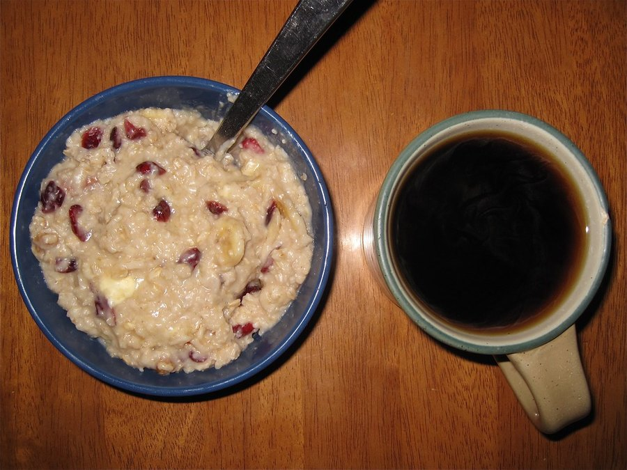

Does SodaSlim Work? The Evidence Behind Its Fiber and Probiotics
SodaSlim leans on gut science that's genuinely interesting. Whether one small capsule can tap into it depends on doses, strains and a single pilot trial.

Key takeaways
- No trial has tested SodaSlim itself. Every claim rests on studies of its separate ingredients.
- Fiber studies use grams, SodaSlim uses milligrams. Its 211 mg of inulin and 100 mg of resistant starch are a few percent of researched amounts.
- Akkermansia has one small human trial behind it, with a pasteurized form at a measured dose of 10 billion cells a day. SodaSlim's label gives no cell count.
- Effects on weight in the research are modest at best, even at full doses. Diet, protein, sleep and activity matter far more.
- Realistic expectation: possibly a subtle change in digestion. Not a predictable drop on the scale.
Does SodaSlim work? There's no study on the product, so nobody can say for sure. Its ingredients, inulin, resistant starch and Akkermansia, have plausible links to appetite and metabolism, but the human trials use far larger fiber doses and a measured Akkermansia count SodaSlim doesn't disclose. Expect subtle gut effects at most, not predictable weight loss.
That answer is less exciting than most ads, but it's the one the evidence supports. Below we walk through each ingredient, what the research actually tested, and how SodaSlim's printed amounts compare. If you want the price, refund and pros-and-cons view instead, our full SodaSlim review with cost per day covers it.

SodaSlim: check today's price
Prebiotic fibers plus a probiotic blend with Akkermansia. One capsule a day, label fully printed. Sold only on the official site, with a 60-day money-back guarantee.
See the official price →What is SodaSlim supposed to do?
The label promises three things: support for craving control and satiety, energy production from fat, and healthy weight management. All three are framed as structure-function claims, which means the FDA hasn't reviewed them.
The idea behind them is the gut microbiome. Fibers that you can't digest feed bacteria in the colon. Those bacteria make short-chain fatty acids such as butyrate, acetate and propionate. In turn, these molecules nudge the gut to release hormones like GLP-1 and PYY, which help signal fullness. It's the same hormone family that prescription GLP-1 medications act on, though at a far gentler level; our piece on GLP-1 drugs and brain fog explains how those drugs work.
Add bacteria that may strengthen the gut lining, and the theory says you get better metabolic signaling. It's a reasonable hypothesis. The question is whether a single capsule delivers enough of anything to test it.
What about "energy production from fat"? That phrase points to short-chain fatty acids, which colon cells burn for fuel, and to animal research on how gut bacteria affect fat storage. It doesn't mean the capsule makes your body burn noticeably more body fat. No human study of these ingredients has shown that at any dose, let alone at SodaSlim's.
How do SodaSlim's doses compare with the research?
This is the heart of the matter. Here's what one capsule supplies next to the amounts typically used in human studies.

| Ingredient | SodaSlim per capsule | Typical study dose | Share of study dose |
|---|---|---|---|
| Chicory root inulin | 211 mg | 5 to 10 g a day, often more | Roughly 2 to 4% |
| Potato resistant starch | 100 mg | 15 to 40 g a day | Under 1% |
| Akkermansia muciniphila | Part of a 36 mg blend | 10 billion cells a day (pasteurized) in the main trial | Can't be calculated: no cell count on label |
| B. infantis and C. butyricum | Part of the same 36 mg blend | Measured in CFU, strain-specific | Can't be calculated |
For context, half a cup of cooked lentils carries several grams of fiber. A cooled cooked potato has more resistant starch than a whole bottle of SodaSlim. That doesn't make the capsule useless, but it does mean the fibers can't be doing the heavy lifting the marketing implies.
Why does SodaSlim list its probiotics in milligrams, not CFU?
Most probiotic labels state colony-forming units, or CFU. That's an estimate of how many live organisms are in each dose, and it's the number researchers use. SodaSlim states the blend by weight instead: 36 mg for all three organisms.
Weight isn't a useful measure for bacteria. A milligram of freeze-dried powder can hold anything from a few million to many billions of organisms, depending on how it was made and how much carrier material it contains. It also says nothing about how many are still alive months after manufacturing.
The label also doesn't break the 36 mg down between B. infantis, C. butyricum and Akkermansia. So you can't tell whether Akkermansia makes up most of the blend or a sliver of it. That's legal, and it's common, but it means no one outside the manufacturer can check the probiotic dose against any study. If the company published CFU per strain and the strain names, this page could give you a much firmer answer.
Does inulin help with appetite and weight?
Inulin is one of the best-studied prebiotics. Trials have looked at it for regularity, gut bacteria, blood sugar and fullness. In several of them, inulin-type fibers raised Bifidobacteria counts and modestly increased feelings of fullness after meals.
Reviews that pool these trials find small effects on body weight and some metabolic markers, mostly at around 10 grams a day, and the results vary a lot from study to study. Some trials show nothing. At 5 to 10 grams many people also report gas, which is why studies often build up slowly.
SodaSlim's 211 mg won't produce those effects in a predictable way. It may add a little food for your gut bacteria. Think of it as a garnish, not a meal.
There's one upside to the small dose. Inulin is a fructan, and people with irritable bowel syndrome or fructan sensitivity often react to it with cramping and gas. At 211 mg, that's much less likely than with a 5-gram scoop of powder. So the low amount trades effect for tolerability.
Does resistant starch do anything at 100 mg?
Resistant starch has produced some of the more interesting fiber results. In small controlled studies, people given 15 to 40 grams a day of high-amylose corn or potato starch showed better insulin sensitivity or more fullness after meals. Weight changes have been inconsistent.
At 100 mg, though, it's hard to argue for any measurable effect. The ingredient's presence is a nod to the science more than a working dose. You'd get more from cooking potatoes or rice and eating them cold the next day, which raises their resistant starch content.
There is a sensible logic to the pairing, at least on paper. Resistant starch and inulin are food for butyrate-producing bacteria, and C. butyricum is one of those bacteria. Putting a fiber and a probiotic together is called a synbiotic. The concept is sound. The execution would be more convincing with grams of fiber, which simply won't fit in one capsule. That's the basic trade-off of the format.
What is Akkermansia muciniphila, and what did the human trial find?
Akkermansia muciniphila is the ingredient that makes SodaSlim stand out. It's a bacterium that lives in the mucus layer lining your intestine. Observational studies have found that people with obesity, insulin resistance and type 2 diabetes tend to have less of it. Mouse studies suggested that adding it back improved metabolic markers.
In people, the main evidence is a 2019 proof-of-concept study published in Nature Medicine. About 40 overweight or obese adults with insulin resistance were assigned to placebo, live Akkermansia, or pasteurized (heat-killed) Akkermansia for three months, at 10 billion cells a day. The pasteurized version improved insulin sensitivity and lowered some blood markers, and there were small shifts in body weight and fat mass. The study was built to test safety and feasibility, not weight loss.
Two details matter for a buyer. First, the form that did best was pasteurized, and SodaSlim's label doesn't say which form it uses. Akkermansia is extremely sensitive to oxygen, so keeping it alive in a capsule is hard. Second, the trial used a precise count of cells. SodaSlim lists 36 mg for three organisms combined, which tells you nothing about how many Akkermansia cells are in each capsule.
It's also worth remembering why Akkermansia got famous. The link between low Akkermansia and obesity came from observational studies, which show association, not cause. Lower levels might partly be a result of diet and weight rather than a driver of them. Animal work suggested a causal role, but mice and people often part ways. That's exactly why the human pilot mattered, and why one small study isn't the end of the story.
European food-safety regulators have since judged the pasteurized form safe as a food ingredient, which is encouraging on safety. Large trials showing weight benefits still don't exist.
What about B. infantis and C. butyricum?
Bifidobacterium infantis has been studied mainly for digestive comfort, such as bloating and irregularity, in specific strains. Clostridium butyricum is a butyrate producer, used for decades as a probiotic in Japan and other parts of Asia. Human data on either one for weight or appetite are thin.
Probiotic benefits are strain-specific. A result from one named strain doesn't transfer to another strain of the same species. Since SodaSlim's label names species but not strains, the research on those species is only a loose guide. That's not unusual among supplements, but it's a real limit. Our article on probiotics for brain fog shows the same pattern in a different area: promising strains, few firm conclusions.
How long would SodaSlim take to work?
If any change happens, it'll likely be digestive first. Gut bacteria shift within days of a diet change, and people starting a probiotic often notice gas, different stool habits, or nothing at all in the first two weeks.
Metabolic changes in the Akkermansia trial were measured at three months. That's longer than SodaSlim's 60-day guarantee. So if you're judging it, focus on what you can track within the window: hunger between meals, cravings, digestion, and your waist measurement. If nothing has moved by week seven or eight, that's useful information. Request the refund before the deadline.
Be fair to yourself about expectation, too. When people pay for something and start watching their hunger closely, they often eat a little more carefully without meaning to. That's not a bad thing. It just means any early change you notice may come from the attention rather than the capsule. Tracking a few simple numbers each week, and changing nothing else, is the only way to tell the two apart.
Who might actually get something out of SodaSlim?
- People already eating well who want to experiment with Akkermansia and accept that results are uncertain.
- Those who prefer a capsule to powders and don't mind paying for convenience.
- Buyers who'll track results honestly and use the 60-day guarantee if nothing changes.
It's a poor fit for anyone hoping for a shortcut on weight, anyone who mainly needs more fiber (food is cheaper and stronger), and anyone with a weakened immune system. That last group should read our guide to SodaSlim side effects and safety before trying any probiotic.
If you do have diabetes or take medicine for blood sugar, nothing in SodaSlim is known to cause sharp drops. Still, the label asks anyone with a known medical condition to talk to a physician first, and that's sensible advice. Fiber and gut changes can shift how you respond to meals, so keep your doctor in the loop.
What works better than SodaSlim for appetite?
The same gut mechanism SodaSlim borrows is far easier to reach through food. A few swaps get you grams of fiber, not milligrams:
- Add a cup of beans or lentils a few times a week. That's 10 grams or more of fiber per serving.
- Eat oats or barley at breakfast. Their beta-glucan fiber is linked with fullness.
- Cook potatoes, rice or pasta ahead and eat them cooled or reheated to raise resistant starch.
- Include onions, garlic, leeks and asparagus. They're natural inulin sources.
- Get protein at every meal. It's the single most reliable dietary lever for fullness.
- Try fermented foods like yogurt, kefir and sauerkraut for live cultures with a long food-safety track record.
Our article on fermented foods and the gut-brain evidence covers that last point in more detail. Ramp fiber up slowly over a few weeks and drink enough water, or you'll trade one problem for bloating.
None of this rules out SodaSlim as an add-on. It just puts it in the right order. Food and habits first, then a capsule if you're still curious. You'll find more guides like this in our energy and metabolism section.
SodaSlim: check today's price
Prebiotic fibers plus a probiotic blend with Akkermansia. One capsule a day, label fully printed. Sold only on the official site, with a 60-day money-back guarantee.
See the official price →Frequently asked questions
Is there any study on SodaSlim itself?
Not that we could find. There are studies on inulin, resistant starch and Akkermansia separately, but no published trial testing the SodaSlim capsule as a finished product.
Is the Akkermansia in SodaSlim live or pasteurized?
The label doesn't say. It lists Akkermansia muciniphila as part of a 36 mg probiotic blend without stating the form or the number of cells.
Can SodaSlim replace a GLP-1 medication?
No. GLP-1 drugs act directly and powerfully on appetite hormones. Fiber and probiotics influence those hormones only slightly, and SodaSlim's fiber doses are small. Never stop a prescribed medicine without talking to your doctor.
Will SodaSlim help me lose weight without dieting?
That's very unlikely. Even full-dose fiber and Akkermansia studies show modest effects, and they happen alongside normal eating. Diet and activity remain the main drivers of weight change.
Should I take SodaSlim before or after meals?
The label only says once daily with an 8 oz glass of water. Taking it at a consistent time, such as before breakfast, makes it easier to remember and to judge any effect.
Can I just buy inulin powder instead?
You can, and it supplies far more fiber for less money. What it won't give you is the probiotic blend. If fiber is your main goal, food or plain inulin is the better value.
Does SodaSlim help with bloating?
It isn't marketed for bloating, and new probiotics can cause a little extra gas at first. Some people find digestion settles after a couple of weeks, but that isn't guaranteed.
Curious enough to test it yourself?
SodaSlim prints every amount on the label, and official orders carry a 60-day money-back guarantee. Check the current price on the official site.
See SodaSlim's official price →Related: SodaSlim review: label, price and verdict · Fermented foods and brain health · Probiotics for brain fog · The gut-brain connection